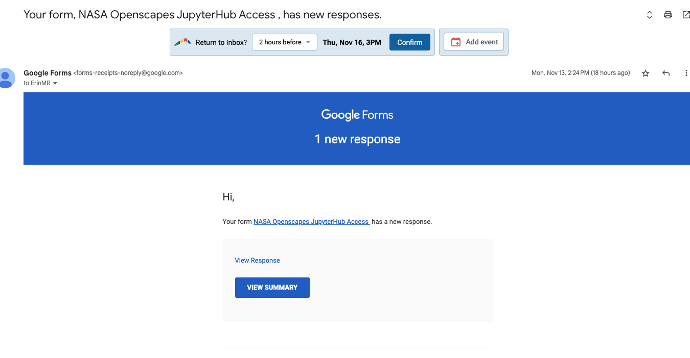
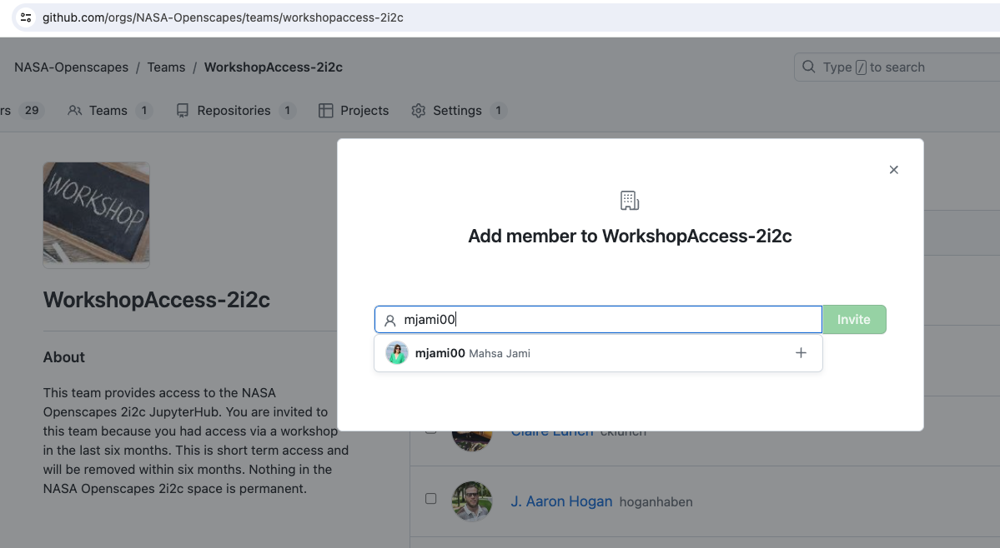
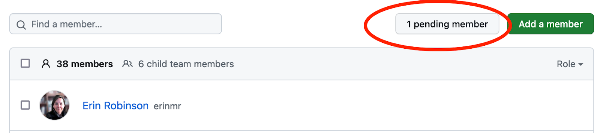

How to Add Folks to 2i2c GitHub Teams
Ask participants: Please add your GitHub Username to this Google form for NASA Openscapes JupyterHub Access .
Set the form responses Openscapes_JupyterHubAccess to notify when there are responses. Also do this for any separate sheets used for workshop JupyterHub registration Click on Responses > click three vertical dots and then check “email notification.”


- When you get an email click ‘view response’ (not
view summary)

On the response page, copy the Github Username
Go to WorkshopAccess-2i2c Team in GitHub > Click Add member > Paste GitHub username. Note there is a separate GitHub team for LongtermAccess-2i2c.

GitHub will ask you for 2-factor authentication for the first one you add, not after that.
This is what this looks like in their inbox:

- Go back to the form and grab their email address. Send one of the following emails to the person.
Email for workshop specific:
Subject: NASA Openscapes Access to 2i2c Hub
Hi [FIRST NAME] -
I have added you to the NASA Openscapes GitHub Organization’s Workshop Team. Please check your email and accept this invitation from GitHub. Once you have joined the team, you will be able to access the JupyterHub.
Here is the link to the hub: https://openscapes.2i2c.cloud/
Here is the material for the Workshop NAME> https://nasa-openscapes.github.io/2023-ssc/
Have a great workshop -
…
Email for General requests:
Subject: NASA Openscapes Access to 2i2c Hub
Hi [FIRST NAME] -
I have added you to the NASA Openscapes 2i2c Jupyter Hub. Here is the link to the hub: https://openscapes.2i2c.cloud/
There is a getting started guide in the NASA Earthdata Cloud Cookbook here: https://nasa-openscapes.github.io/earthdata-cloud-cookbook/
We’d love to know about the kind of work you are doing on the hub, and I’ll follow up in the next few months.
Best,
…
- In the Form Response Sheet, in Column G add the date they were added to the Hub - in part so that we as admins knew if someone had already fulfilled the request. Rows 453+ are the most recent, but it can vary. Check Column A for the date of the form request.
Directions for participants
Please go to https://github.com/nasa-openscapes
Click the big yellow bar that says “you’ve been invited”
Not seeing that bar?
Are you logged into GitHub.com?
Have you shared your GitHub username via this form?
Troubleshooting
Users get 403 error
This is a common issue. User must find email notification from GitHub and accept invitation. If they had clicked in email to accept but did not complete accepting in GitHub, edit their invitation in GitHub to uninvite and reinvite. They should get new email to accept.

Didn’t get email
Go to https://github.com/nasa-openscapes, see the big yellow bar that says You’re invited.
Notes on process and any issues
Yuvi has started documenting the issues we are running into here -> https://hackmd.io/tWfqVai4SDC1CbQ4mhfIbw